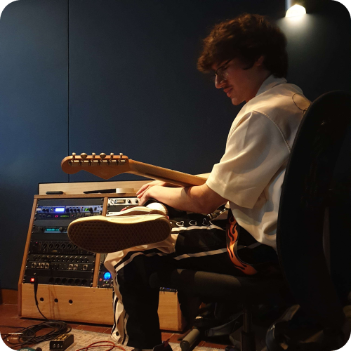

Hoi, ik ben Tom, 18 jaar, en ik ben nu al twee jaar bezig met het leren van muziek maken. In het eerste jaar richtte ik me vooral op de productiekant, zoals het maken van beats en sound design. Het afgelopen jaar ben ik begonnen met gitaar spelen en het maken van alternatieve/indie rockmuziek.
De reden dat ik gitaar ben gaan leren is eigenlijk best bijzonder. Er was een meisje dat ik leuk vond en zij kon gitaar spelen. Ik dacht er al over na om een gitaar te kopen, dus besloot ik mijn eerste gitaar aan te schaffen. Na een half jaar kwam ik erachter dat ze op vrouwen viel.

Hoi, ik ben Alec, 19 jaar, Ik maak nu al 4 jaar lang muziek. In het begin was ik meer digitaal bezig met beats maken en wat random dingen. Ik heb 6 jaar op saxofoon les gezeten en heb zelf de piano, gitaar, basgitaar en een beetje drums geleerd. Ik maak nu vooral Mexicaanse (Corridos/Sierreño) en indie muziek.
Sinds al heel vroeg was ik al met muziek bezig en ik begon ook met saxofoon toen ik 6 was. De reden dat ik andere instrumenten begon te leren komt vooral door mijn vader omdat hij ook muzikaal is. De gitaar heb ik eigenlijk voor mijn vriendin geleerd en het is inmiddels mijn favoriete instrument.